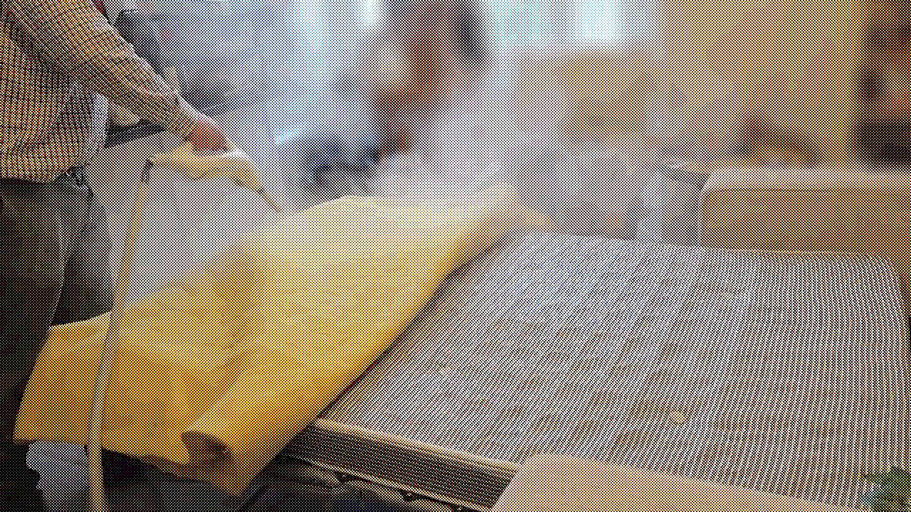
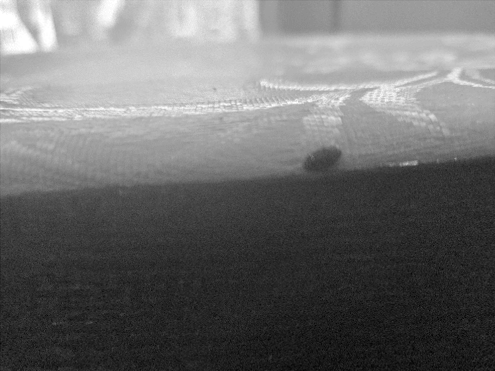
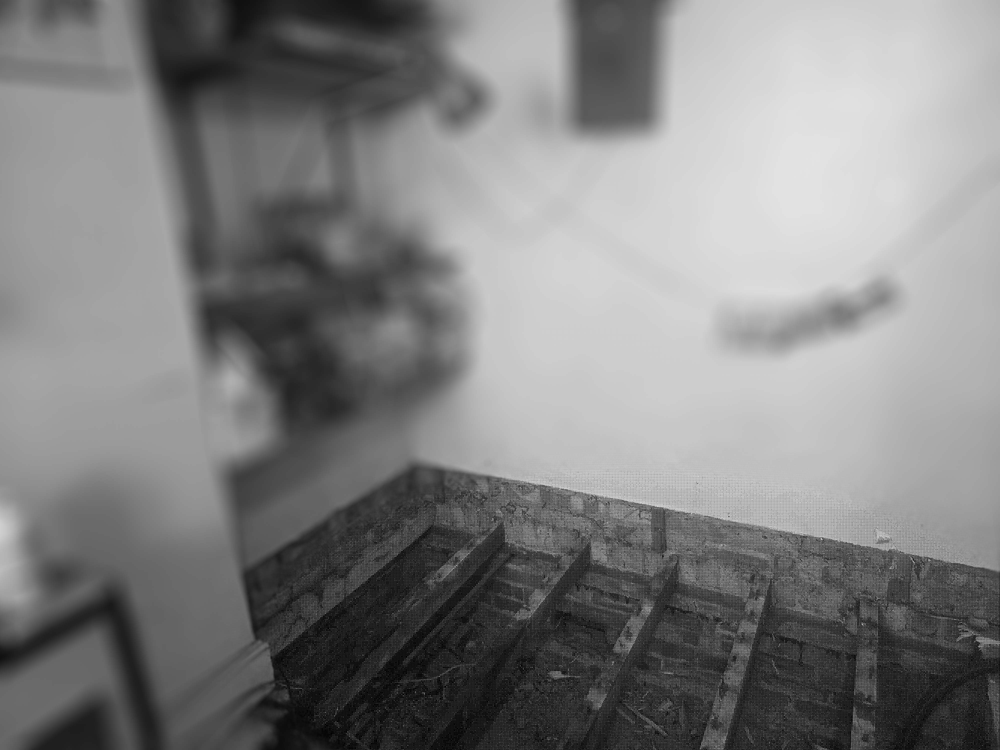
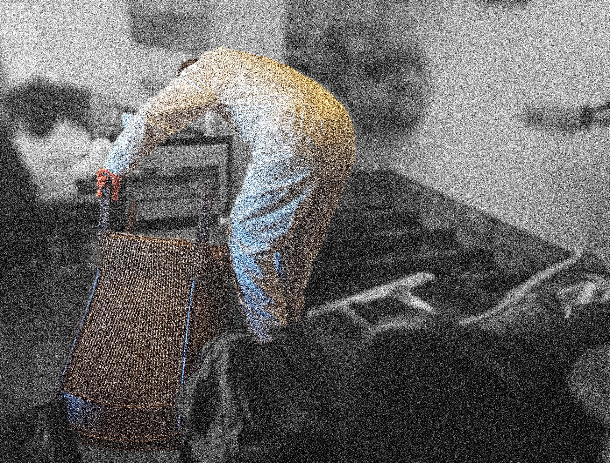
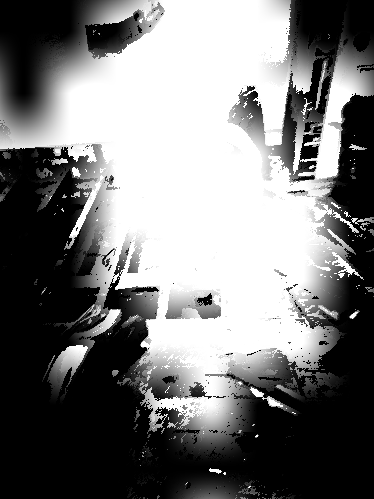
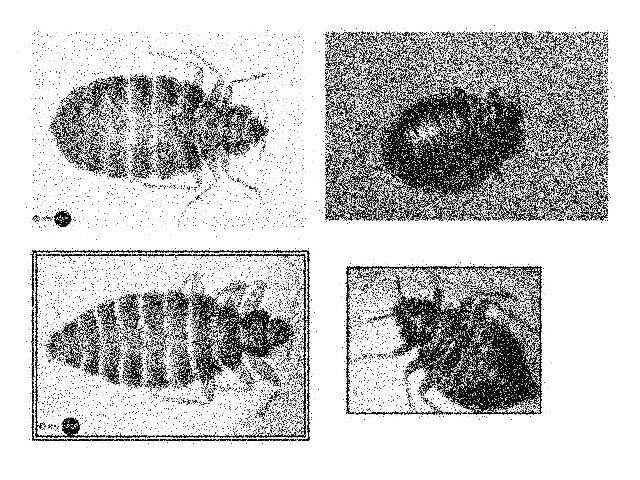
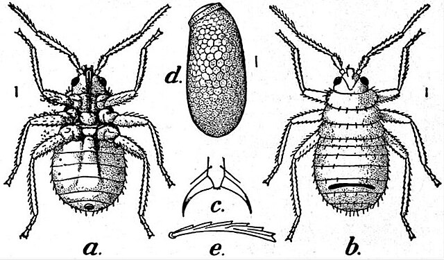
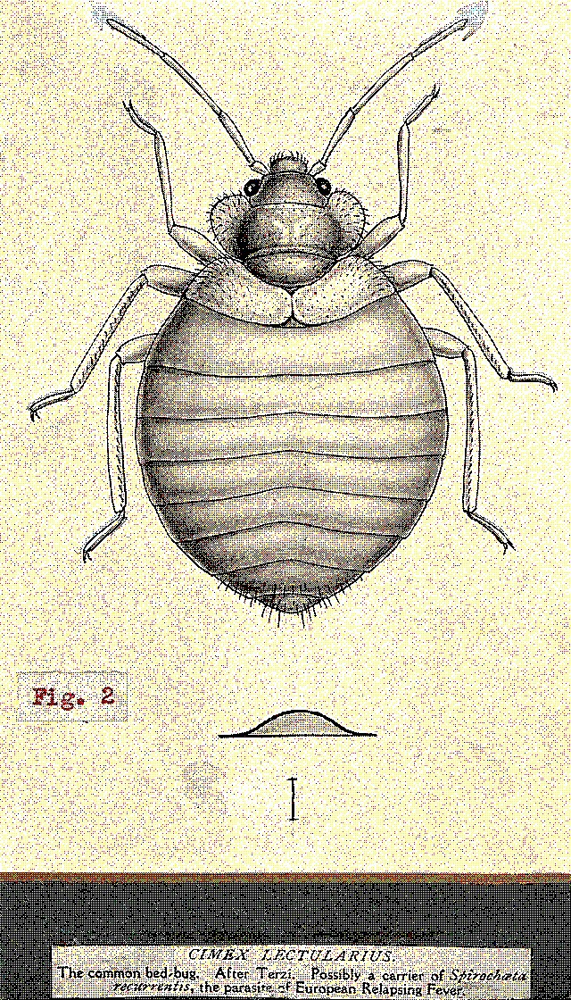
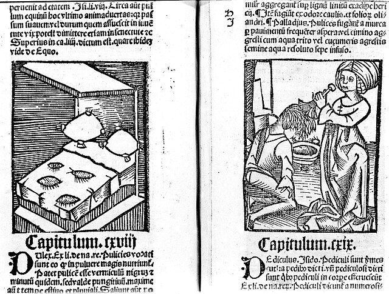

As you are reading this, a cadaver is lying at home, waiting to be found.
DOUBLE-CLICK AN ICON TO BEGIN
Field log
Brighton, couple in their 20s – had bed bugs and believed they hadn't rid of them yet. Did not get pest control before. This is their first appointment with Matthew – he immediately does heat treatment and steaming in the flat. As he states that he "doesn't do inspections" and "if you got bed bugs, you know you got it". But he later retracts on that statement as we discuss delusional clients.

Matthew had been in pest control since he left school. His father worked in the same field. In show & tell day Matthew's father sent him to school with a dead bat. He was sent to the principal's office.
He says field biologists ('pesties' he calls them) might be more keen to let me in for research. Cavemen got bed bugs from bats hundreds of thousands of years ago, he says.
The bedroom's window is double glazed, making it ideal for effectively turning the room into an oven – the goal temperature is 70-80 degrees c for at least four hours. Matthew sets a reflective sheet for insulation and blasts steam from a gas balloon from the bottom. He lets me check the room's temperature with an infrared thermostat as it's rapidly rising. It's fun.
The paranoia of infestations doesn't rub off on Matthew. He doesn't wear the suit nor changes his clothes when coming home. Just sits on his couch. He says that he only brought bed bugs home with him once, because he was careless. He is very resilient in that sense.
Council care homes and children's homes are vulnerable to infestations. Councils have tried to save on pest control by prioritizing getting contractors to exterminate one type of pest over the other. But you can't save on pest control.
He tells me of an old lady who was feeding the foxes and another old lady who was council ordered to clear up rat dropping from her house floor. When Matthew got there she had already removed several trash bags worth of dry droppings on her own. The build up was 10-15 years of droppings – the council charged her with the money they might need for contractors for treatment of the house but not for the help she needed. For all Matthew knows, she is still in that house. He made a throwaway comment, half joking of all the crazy women in his field.
Wednesday's appointment in west London would be at an older lady's house. It would be a steaming treatment. I am curious to see how her interaction with Matthew would go as she fits the DP patient profile as well as belongs to a demographic that's more vulnerable to infestations.
Field log
West Kensington station is pretty. On the Underground I wonder if all these people know they are in danger.
The train is packed - I am looking at a woman in a fur coat, a child on his father's lap on the upholstered seat. Everything feels contaminated here.
Matthew tells me he was cleaning pigeon shit Tuesday. He says the lady today is a bit paranoid. I ask if she is being 'rightfully paranoid?' He says she is not the worst he'd seen. Later, we find a bed bug in the seam of her mattress.

Matthew presents me as his trainee. She asks if the bugs can latch onto the cases of her medication. He says no but they can stick to books and there are a lot of items around. He extracts something round and dark brown from the bed – apparently it's a stale biscuit. Steaming treatments by themselves are fairly quick – but depend on the clutter in the house.
He told me once about a man whose nephew, post mortum commissioned a bed bug extermination. Said he had a wonderful collection of books that sadly were full of them (I didn't know bed bugs latch on books I said. It was just that bad he replied).
Matthew says the nastiest thing is not the bed bugs – it's going through people's bedding. He shows me a fresh inky spot of bed bug feces on the mattress – it still smudges - they fed on her just hours before.
Is that —
I point at a black spot at the seam of the mattress.
No, that's just fluff. I ask if any clients ever provide such evidence
He says that yes, the crazy people.
Field log
Content warning: this log contains descriptions of death and human decomposition. Reading time approx. 2-5 minutes.
I get to the address before Matthew – he tells me on the phone to enter through the side alley.
I am joining an after death clean up – where a person's body has been found only after a while. As you decompose, your body seeps down and turns into black debris, embedded into the floorings and furniture.

The neighbor is the first to greet me. He is dumbfounded when I ask about the pest control people – I guess it would be an insult to be disposed of in the same manner as pests and trash.
Warren, the other person in that day says it is his first time on this kind of job. He is visibly shaken by it. The nature of the job is dismantling any piece of the house the body had amalgamated with. Then placing them in bags.

As I am transcribing later – Warren says on the recording of the deceased's body lying there that his 'body fluid just gone through to heaven' I am not sure why I think it's beautiful.
I ask how long has it been? Warren doesn't know how long it takes a body to do that. He was told it's been roughly a week. Matthew told me it's been a couple months. It's March. Calendar has logs up to mid January.
There is something charming about the incongruity of the collections I find across the house; a blender next to medical records, a couch manual, art equipment – but as a certain point the state of clutter becomes too much. I wonder how it might have felt for his house to turn on him; the familiar books hindering movement; the medical equipment becoming an insult; the now vacant bedrooms upstairs functioning as storage units.
Somewhere being a place you are left in
Matthew says most of these cases have carers, though they 'obviously don't do much'. He says it happens often in the UK. His longest case was 12 months. A 24 year old was his youngest.

Field audio
Field audio
Introduction



You are a researcher investigating bed bug infestations and a condition known as Delusory Parasitosis, conducting a series of shadowing interviews in pest control.
This is your desktop, your archive of materials of your research and field work.
Instructions:
double-click icons to open windows. They can be dragged around the screen, closed or minimized.Looking at your field logs you might find a three act narrative:
I. A young couple
II. An older woman
III. An after death clean
Read-through time: approx. 15-20 minutes [You don't have to go through it all though!]
Happy reading. don't scratch too hard.
Fun Facts
- They travel well and often
- They spread through public transport
- A few years ago, bed bugs traveled on the Eurostar from Paris to London
- Waves of infestations happen in summer when people travel
- They are smart
- Their bites tend to cluster on one spot – sometimes come in threes or more but they won't necessarily follow this pattern – they can be extremely cautious and taste you on one spot.
- They don't operate as a colony or a swarm.
- If there are a lot of them, it's just because.
- Their eggs are tiny like specks of dust and will latch onto your clothes easily
- In a lab environment, 50 degrees c for an hour should kill them
- Having bed bugs isn't a sign of bad hygiene – just bad luck.
- They develop resistance to pesticides.
- Bed bug spray must touch them to kill them
- They are attracted to humidity and darkness
Field log
I'm at the anthropology department. A lecturer is running me through interview methodologies - smile and nod - to avoid corrupting your audio. Get your foot at the door with small talk and so on.
I'm telling him about my research when a TA drops by, 'I can already feel them crawling' she comments. It's such a simple way to express empathy I think.
He tells me about Morgellons disease. Parasitosis is a clinical diagnosis. Morgellons is largely self-diagnosed but falls under DP technically. It's a twisted, oddly specific symptomatic form of patient agency.
I would like to note that either can be caused by an array of other conditions as a complication. If your body is sick so is your mind and vice versa.
I wonder why I'm seeking out the bed bugs. Do I need to pursue sickness for self worth? Am I searching for sickness? Am I sick? Am I at this point masquerading illness?
A minimal bed - maybe pixelated "click me" to reveal the TD sketch as bugs all over - under the images, videos from September will run OR the interactive fiction play button
To come - images? WhatsApp screenshots? or just the bed bugs on the mattress? Captioned omg omg omg
Hortus Sanititis
Add Matthew paraffin audio

House Pics I've Taken
[That I probably shouldn't have]
Acknowledgements
Thank you Matthew Blackwell, Warren King and Project Multipest for sharing your insights from work in pest control. Thank you Ricardo Leizola for consultation regarding interview and documentation methodologies as well as interesting conceptual links. Thank you Millicent Gunn, Louise Rouse, Jeremy Wenger - for consultation regarding curation, UX, adaptation to a gallery setting, interactive story telling UX concerns and other
Author: Michaella Miller
MA Computational Arts
Goldsmiths, University of London, 2026
bibliography
Images
Wellcome Library, London (1499) Hortus Sanitatis: bed bugs, delousing. Wikimedia Commons. Available at: https://commons.wikimedia.org/wiki/File:Hortus_Sanitatis;_ bed_bugs,_delousing._Wellcome_M0011711.jpg (Accessed: April 10th 2026). License: CC BY 4.0.